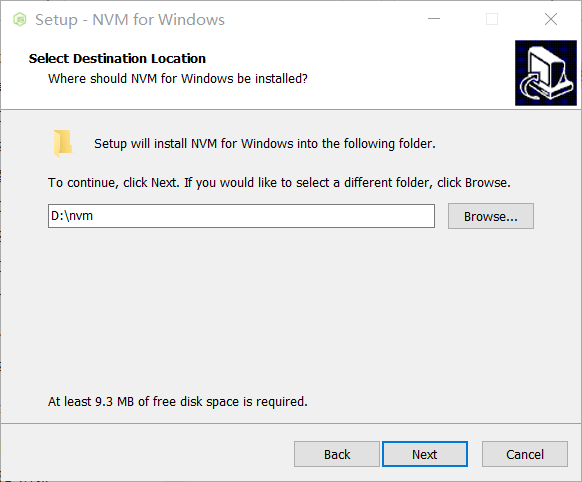
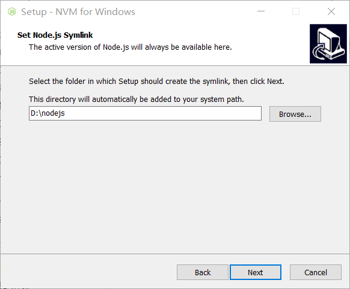
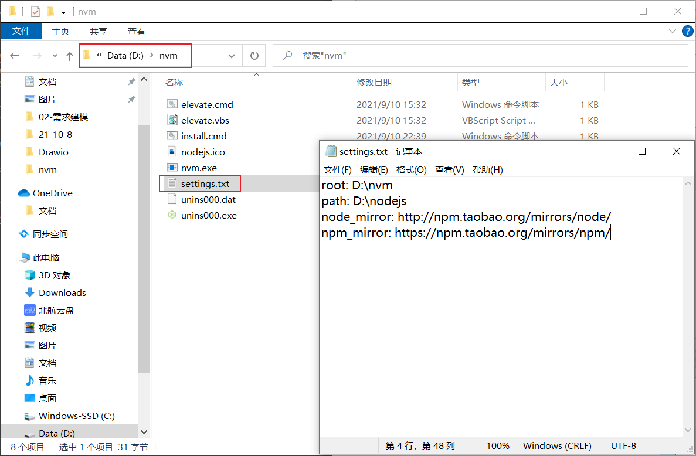
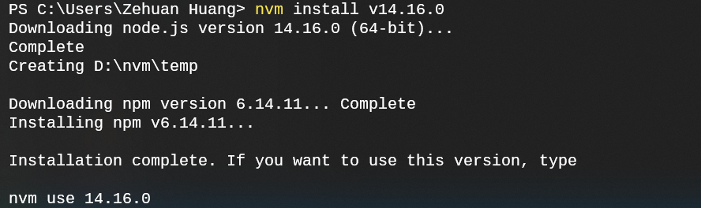
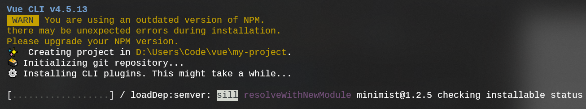
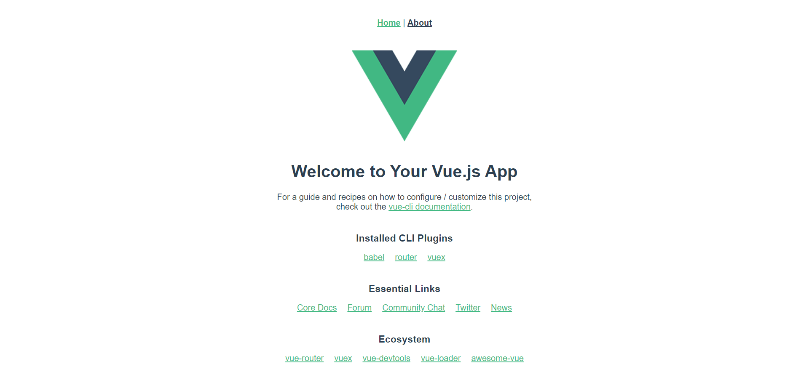

Vue 安装
使用 Vue.js 的方式有很多，包括直接用 script 标签引入、使用 CDN 方法引入、NPM 方法安装等。在一般较大的项目开发中，都会采取后者，这里也仅对 NPM 安装方式进行介绍。
NPM 是 Nodejs 下的包管理器，具备命令行接口和软件注册中心 (registry)，使用 npm 可以安装、管理、运行 packages，为项目代码适配 packages 等。本教程常用的是用它来安装环境包（如 vue-cli），以及运行 vue 等前端项目（npm run serve）。
下载 NPM，有两种方法，直接下载使用一个特定版本，或安装 NVM（npm version manager）可管理多个 NPM 版本环境。我推荐的是使用 NVM 安装。原因是 Nodejs 版本更新快，向前兼容性较差，很容易平时使用的版本无法安装某个插件环境。比如 v14 安装了 vue 环境，此时想在本地安装 gitbook 环境，发现很多插件要求 v10，如果采用的单一版本就无法使用这些插件。而 nvm 就是类似 conda 的环境管理器，允许在一台机器拥有多个 NPM 版本环境。
不想采用 NVM 安装方法，文末有推荐直接安装 NPM 的博客链接
下载 NVM
若本地有 Nodejs 环境，下载 NVM 前需先卸载！
第一步，下载最新版 nvm，链接如下：
- Windows 版本：https://github.com/coreybutler/nvm-windows/releases，下载 nvm-setup.zip
- Mac 版本：https://github.com/nvm-sh/nvm#install--update-script
下载时注意安装路径不能出现空格，最好不要用中文路径！


安装完成后，输入下列命令验证是否安装成功：
nvm --version
接下来，将 npm 包的下载源地址更改为淘宝镜像。打开 nvm 安装文件夹，在文件夹下的 settings.txt 文件中添加：
node_mirror: http://npm.taobao.org/mirrors/node/
npm_mirror: https://npm.taobao.org/mirrors/npm/

NVM 常用命令
给出一些常用的 nvm 命令：
nvm --version # 查看nvm版本
nvm install latest # 安装最新版 nodejs
nvm install <version> # 安装指定版本 For examle:
nvm install v14.16.0
nvm ls # 查看已安装的 nodejs 版本
nvm use v14.16.0 # 切换使用 v10.13.0 版本
nvm alias default 14.16.0 # 设置默认版本
使用 Nvm 安装 Nodejs
使用 nvm install 命令安装 Nodejs，这里以 14.16.0 版本为例：
nvm install v14.16.0
等待较短时间后，即安装成功。

接下来输入：
nvm use v14.16.0
npm --version
可确认 npm 是否安装成功。
[!TIP|style:flat] 执行
nvm use命令后若出现return status 1和一段乱码的错误提示，则用管理员身份打开 cmd 重新执行
安装 Vue 环境
输入以下命令，安装 vue.js、vue-router、vue-cli 脚手架到 global 全局目录：
npm install vue -g
npm install vue-router -g
npm install -g @vue/cli
使用 vue-cli 创建 vue 项目：
vue create my-project
# 这里需要进行一些配置，可选择 vue2 或 vue3，后面文章再提

进入项目，安装并运行：
cd my-project
npm install
npm run serve
成功运行后，访问 http://localhost:8080/ 即可看到 vue 项目的默认界面。
如果 8080 端口被占用，这里的端口可能会改变，实际以终端提示为主

后言
1. 安装 Vue 的其它方式
如果不想采用本文章所讲的『Nvm管理和Npm安装』的方式，可以参考以下链接直接安装 NPM：
2. 关于 Nvm 的实现方式
如果安装了多个 Nodejs 版本，可以看到 nvm 目录下有多个版本对应的目录，比如 v10.13.0、v14.16.0 等；安装时选择了两次路径，第二次设置的是当前使用的 Nodejs 环境，可以看到安装后它是一个快捷方式，指向 nvm 目录下的某个版本。
3. Npm 安装包速度慢的问题
不管是使用 Nvm 管理还是直接下载 Npm，都可能会遇到 Npm 安装依赖速度慢的问题，原因是 Npm 官方镜像服务器在海外，当然如果你有科学上网的工具，应该没这个问题。国内加速访问可以通过以下命令指定 Npm 安装镜像为淘宝镜像：
npm config set registry https://registry.npm.taobao.org